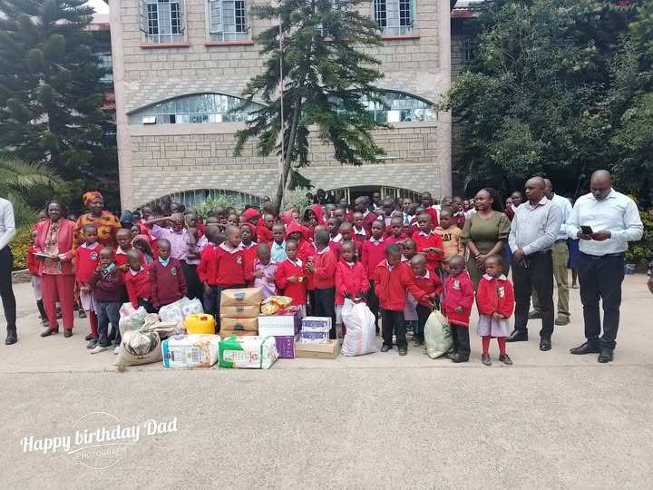
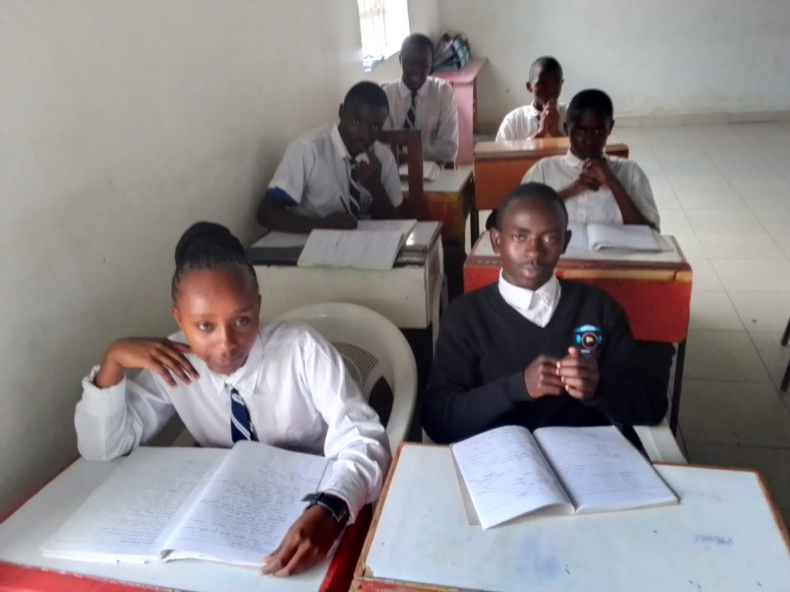
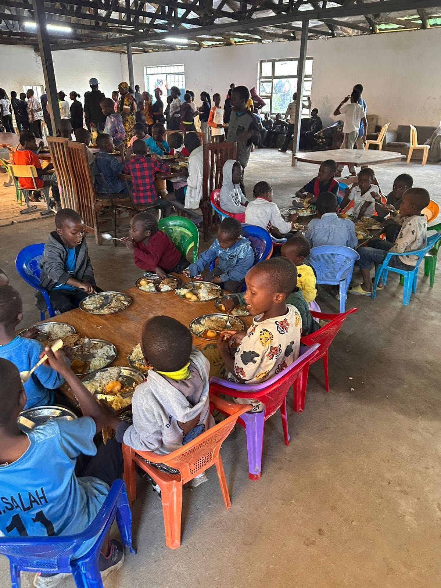
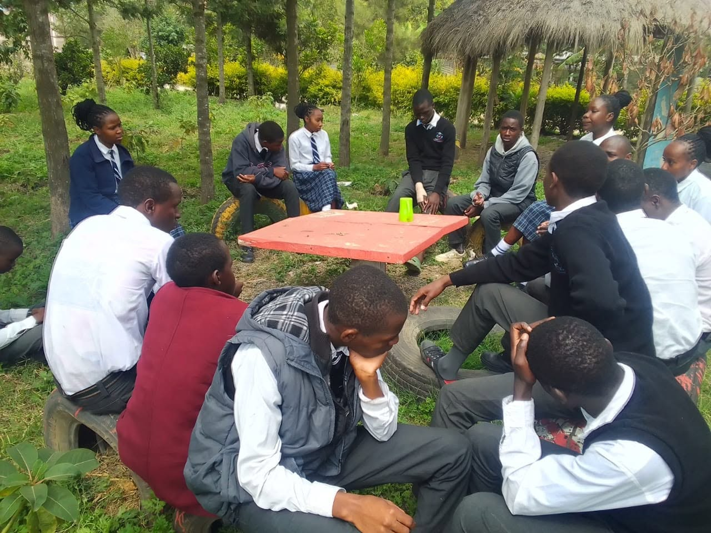

Heritage of Faith and Hope offers safe housing, education, health care, and counselling for Orphans and Vulnerable Children.
01 · Home for OVC
We offer shelter and food to orphans and vulnerable children. For these reasons, they have a place to call home.

The centre, Pridelands, Mlolongo
Students in class02 · We Educate
We ensure access to quality education from primary to tertiary levels. Currently, we are running Play Group, Pre-School, Primary School, Junior Secondary School, and Senior School up to Form 3.
03 · Health & Nutrition
We ensure children’s well-being through medical check-ups, nutritious meals, and health education.

Meal time at the centre
A peer support discussion circle04 · Psycho-social Support
We provide emotional and psychological support to help children overcome trauma and build resilience.
“Religion that God our Father accepts as pure and faultless is this: to look after orphans and widows in their distress.”
James 1:27
Rooted in Faith & Purpose
Care rooted in James 1:27: to look after orphans in their distress, and to keep that care pure and faultless.
We believe that education and employment give people the inner strength to lead a better life.
Under the leadership of Pastor Francis Wachira since 2008, the centre has flourished spiritually, with children learning to pray confidently and live by biblical teachings.
“But grow in the grace and knowledge of our Lord and Saviour Jesus Christ.”
2 Peter 3:18
 Children in worship assembly
Children in worship assembly
The Rhythm
Illustrative. Happy to line this up with the centre’s actual daily schedule once you share it.
The day starts together, as a household, before children head into their school day.
Lessons run on-campus, so no child loses a school day to travel or transition.
A nutritious meal and a break, part of the daily health and nutrition routine.
Academic support alongside the psycho-social care that helps children process and heal.
The household comes back together to close the day: the residential, family-style care in practice.
The Register · Measured So Far
We have the amazing facts about the organization. We are happy to be growing and helping more day by day.